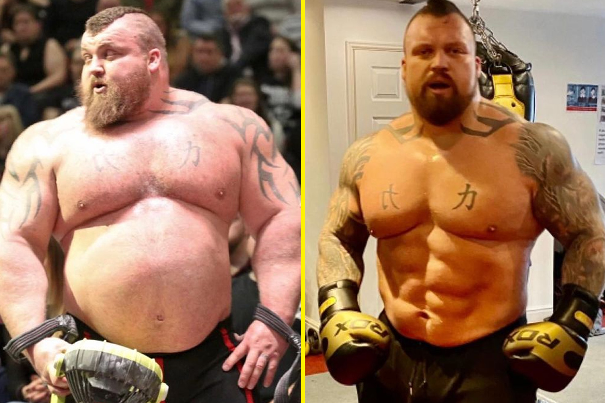
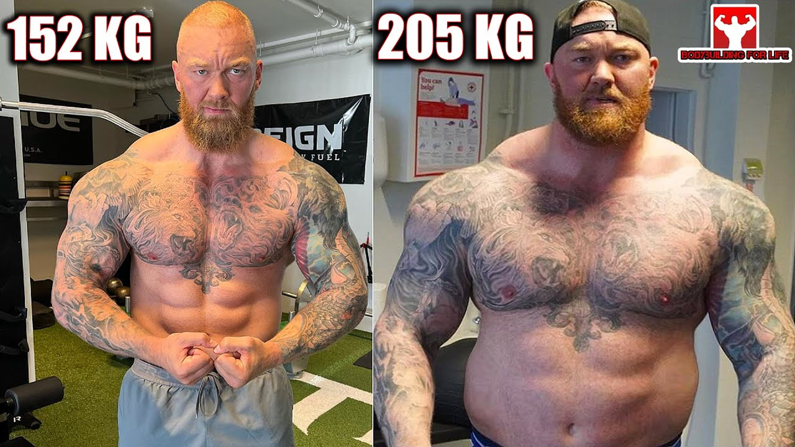

Eddie Hall vs Hafthor Björnsson — The Boxing Chapter
Feud Escalates & Fight Announced
After Thor’s 501kg deadlift in 2020, the debate over legitimacy ignited. Eddie maintained that Thor’s lift, done outside a traditional strongman arena during lockdowns, wasn’t equivalent to a Giants Live show. Thor countered that it was fully officiated and calibrated. The back-and-forth escalated until the rivals agreed to settle it in the ring in 2021—billed as The Heaviest Boxing Match in History.
Thor’s Weight-Loss & Boxing Transformation
To prepare for boxing, Thor and Eddie reinvented their eating and training. Thor dropped over 100 pounds from his peak strongman mass, overhauling his diet and adding roadwork, pad work, sparring, and dedicated mobility and conditioning sessions. The goal: keep enough power to hurt, but move like a boxer—better footwork, a long jab, and sharper timing. The transformation left him lighter, quicker, and far more conditioned while retaining elite strength.
 Injury Delay & Reschedule
The original 2021 date was scrapped after Eddie suffered a biceps tear in training that required surgery. The bout was postponed to March 19, 2022, giving both men more time to adapt to the demands of boxing and turning the grudge into a two-year buildup.
Fight Week: Press Conference & Weigh-In
Fight week in Dubai was tense. The press conference and face-off were heated, highlighting years of rivalry and social-media jabs. At the official weigh-in, Thor came in around 152 kg (~335 lb) at 6′9″, and Eddie at ~142 kg (~313.5 lb) at 6′2″. The exhibition was set for six two-minute rounds—shorter than standard pro heavyweight rounds, but still a real test of skill, conditioning, and composure.
Fight Night: Round-by-Round Highlights
From the opening bell, Eddie pressed forward with looping power shots, looking for a home-run punch. Thor stayed composed, controlled distance with the jab, and punished entries. Momentum swung firmly to Thor after early exchanges, and he scored two knockdowns—one in the middle rounds and another late—by timing counters as Eddie’s guard dropped. Thor’s reach, footwork, and measured pace wore Eddie down as the rounds piled up.
to watch the press conference follow this link LANGUAGE WARNING Press Conferance
Result & Immediate Aftermath
After six rounds, Thor won by unanimous decision. The scorecards reflected clear control behind the jab, cleaner counters, and two knockdowns. Eddie showed grit and heart crossing into a new sport; Thor proved he could shift disciplines, outbox a fierce rival, and settle the score outside of strongman. The result also flipped public perception of the rivalry: Thor now had the deadlift record and the head-to-head win.
Here are the Fight Highlights Fight Highlights Video
Where We Are in the Story
- Feud escalates and fight is announced
- Thor’s weight-loss & boxing transformation
- Injury delay & reschedule
- Fight week: press conference & weigh-in
- Fight night: round-by-round highlights
- Result & immediate aftermath
Next up: Thor’s comeback in strongman and the all-time deadlift records.